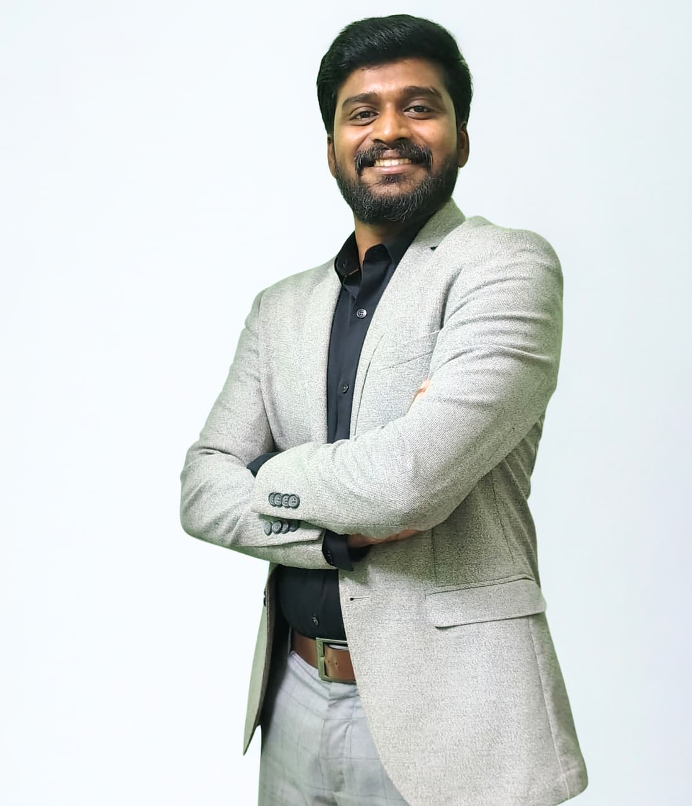

AI • IoT • Industrial Digitalization • Sustainability Technology
Helping industries transform through Artificial Intelligence, IoT, and data-driven sustainability solutions.
📍 Bengaluru, India | 📧 anandvijayakumar8@gmail.com | 📞 +91 7356008082
I am an AI and IoT technology expert with over 8+ years of experience in industrial digitalization, sustainability technology, and deep-tech product development. My work focuses on helping industries leverage data, artificial intelligence, and sensor-driven technologies to improve operational efficiency, optimize resource usage, and achieve sustainability goals.
Over the years, I have collaborated with leading industrial organizations including Tata Group, Adani Group, Coca-Cola, ITC, Toyota, SKF, and Ashok Leyland, supporting them in implementing AI-driven analytics platforms, smart metering systems for energy and water, and industrial IoT solutions.
My expertise lies in building technology products from concept to commercialization, identifying product-market fit, defining use cases, and developing market-ready solutions that create measurable business impact.
In addition to industry work, I actively contribute to technology education, research, and industry knowledge sharing, delivering training programs, workshops, and talks on AI, IoT, sustainability technologies, and digital transformation.
I have worked with several large enterprise clients across manufacturing, infrastructure, and sustainability sectors, helping them deploy digital technologies that improve efficiency and environmental performance.
Organizations include:
These engagements focused on implementing AI and IoT-based monitoring systems that track energy consumption, water usage, and operational performance, enabling organizations to take data-driven sustainability decisions.
A key part of my work involves building technology products and taking them to market.
Through these efforts, I have successfully helped launch new deep-tech products and generated multi-crore revenue within a short span through strategic positioning and customer adoption.
I have published research in Artificial Intelligence focused on anomaly detection using sensor data.
The research explores how machine learning models can identify abnormal patterns in industrial sensor data, enabling early detection of operational issues and supporting predictive monitoring systems.
I actively conduct training programs and workshops for professionals and organizations.
Sessions delivered for:
Training topics include:
M.Tech – Artificial Intelligence
REVA University, Bengaluru
B.Tech – Electronics & Communication Engineering
Mahatma Gandhi University, Kerala
My mission is to bridge the gap between advanced technologies and real-world industry challenges, enabling organizations to harness AI, IoT, and data analytics to drive sustainability, efficiency, and innovation.